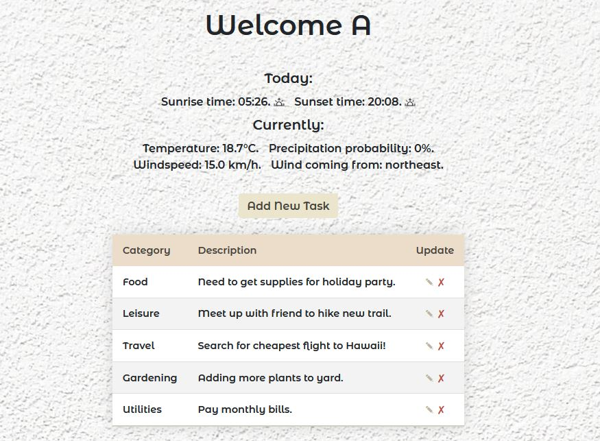

{% import "bootstrap/wtf.html" as wtf %}
{% include "header.html" %}

{% block content %}
<div class="container-fluid body-content">

    {% if not current_user.is_authenticated %}
    <div class="row main-pg-col">
        <div class="col-lg-6">
            <h1 class="main-msg">Stay On Track. Live In The Present.</h1>
            <br>
            <div class="grouped">
                <a href="{{ url_for('register') }}" class="btn btn-secondary btn-block btn-large main-pg-btn1">Register</a>
                <a href="{{ url_for('login') }}" class="btn btn-secondary btn-block btn-large main-pg-btn1">Login</a>
            </div>
        </div>
        <div id="frontpagecol" class="col-lg-6">
             
        </div>
    </div>
    <div class="row footerrow-index">
        {% include "footer.html" %}
    </div>

    {% else %}
    <h1>Welcome {{current_user.username}}</h1>
    <div class="container">

        <br>

        <div class="weather">
            <h5 class="weather_title">Today:</h5>
            <span class="weather_item">Sunrise time: {{sunrise}}. 
                <svg xmlns="http://www.w3.org/2000/svg" width="16" height="16" fill="currentColor" class="bi bi-sunrise" viewBox="0 0 16 16">
                    <path d="M7.646 1.146a.5.5 0 0 1 .708 0l1.5 1.5a.5.5 0 0 1-.708.708L8.5 2.707V4.5a.5.5 0 0 1-1 0V2.707l-.646.647a.5.5 0 1 1-.708-.708l1.5-1.5zM2.343 4.343a.5.5 0 0 1 .707 0l1.414 1.414a.5.5 0 0 1-.707.707L2.343 5.05a.5.5 0 0 1 0-.707zm11.314 0a.5.5 0 0 1 0 .707l-1.414 1.414a.5.5 0 1 1-.707-.707l1.414-1.414a.5.5 0 0 1 .707 0zM8 7a3 3 0 0 1 2.599 4.5H5.4A3 3 0 0 1 8 7zm3.71 4.5a4 4 0 1 0-7.418 0H.499a.5.5 0 0 0 0 1h15a.5.5 0 0 0 0-1h-3.79zM0 10a.5.5 0 0 1 .5-.5h2a.5.5 0 0 1 0 1h-2A.5.5 0 0 1 0 10zm13 0a.5.5 0 0 1 .5-.5h2a.5.5 0 0 1 0 1h-2a.5.5 0 0 1-.5-.5z"/>
                </svg>
            </span>
            <span class="weather_item">Sunset time: {{sunset}}.
                <svg xmlns="http://www.w3.org/2000/svg" width="16" height="16" fill="currentColor" class="bi bi-sunset" viewBox="0 0 16 16">
                    <path d="M7.646 4.854a.5.5 0 0 0 .708 0l1.5-1.5a.5.5 0 0 0-.708-.708l-.646.647V1.5a.5.5 0 0 0-1 0v1.793l-.646-.647a.5.5 0 1 0-.708.708l1.5 1.5zm-5.303-.51a.5.5 0 0 1 .707 0l1.414 1.413a.5.5 0 0 1-.707.707L2.343 5.05a.5.5 0 0 1 0-.707zm11.314 0a.5.5 0 0 1 0 .706l-1.414 1.414a.5.5 0 1 1-.707-.707l1.414-1.414a.5.5 0 0 1 .707 0zM8 7a3 3 0 0 1 2.599 4.5H5.4A3 3 0 0 1 8 7zm3.71 4.5a4 4 0 1 0-7.418 0H.499a.5.5 0 0 0 0 1h15a.5.5 0 0 0 0-1h-3.79zM0 10a.5.5 0 0 1 .5-.5h2a.5.5 0 0 1 0 1h-2A.5.5 0 0 1 0 10zm13 0a.5.5 0 0 1 .5-.5h2a.5.5 0 0 1 0 1h-2a.5.5 0 0 1-.5-.5z"/>
                </svg>
            </span>
            <h5 class="weather_title">Currently:</h5>
            <div>
                <span class="weather_item">Temperature: {{temp}}.</span>
                <span class="weather_item">Precipitation probability: {{precip_prop}}.</span>
            </div>
            <div>
                <span class="weather_item">Windspeed: {{windspeed}}.</span>
                <span class="weather_item">Wind coming from: {{wind_direction}}.</span>
            </div>
        </div>


        <!-- Add Button, once clicked will create a popup modal with wtf quickform -->
        <button id="addButton" type="button" class="btn btn-primary" data-toggle="modal" data-target="#exampleModal">Add New Task</button>
        <div class="modal fade" id="exampleModal" tabindex="-1" role="dialog" aria-labelledby="exampleModalLabel"
             aria-hidden="true">
            <div class="modal-dialog" role="document">
                <div class="modal-content">
                    <div class="modal-header">
                        <h5 class="modal-title" id="exampleModalLabel">New Task</h5>
                        <button type="button" class="close" data-dismiss="modal" aria-label="Close">
                            <span aria-hidden="true">&times;</span>
                        </button>
                    </div>
                    <div class="modal-body">
                        {{ wtf.quick_form(todo_form, novalidate=True, button_map={"submit_add": "primary"}) }}
                    </div>
                    <div class="modal-footer">
                        <button type="button" class="btn btn-secondary" data-dismiss="modal">Close</button>
                    </div>
                </div>
            </div>
        </div>

    </div>

    <br>

    {% include "todo_table.html" %}

    <div class="row footerrow-index-loggedin">
        {% include "footer.html" %}
    </div>

    {% endif %}

</div>


{% endblock %}
